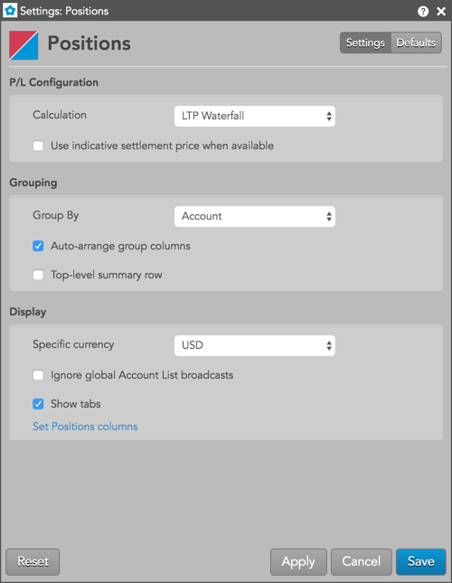

Right-click in the widget to open the context menu and select the following actions:
These settings affect only the selected Positions widget. To update the default settings with these value for newly-opened Positions widgets, or to apply them to existing opened widgets, click Defaults.

{% include settings/positions-settings-local.html %}